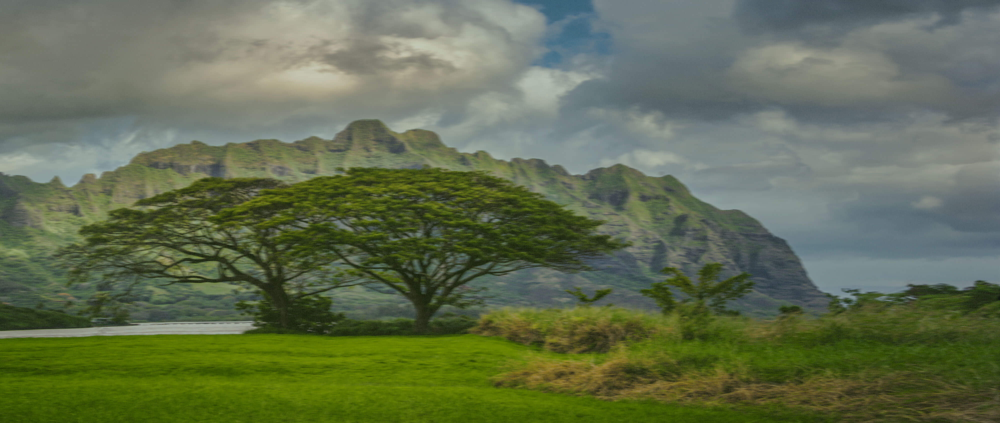
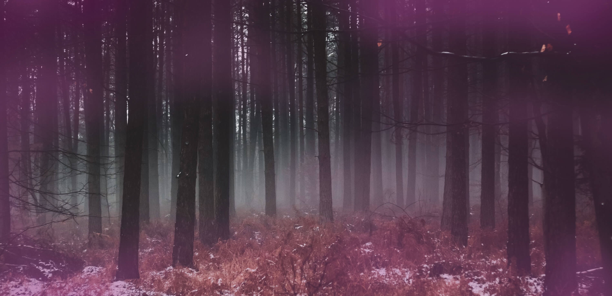
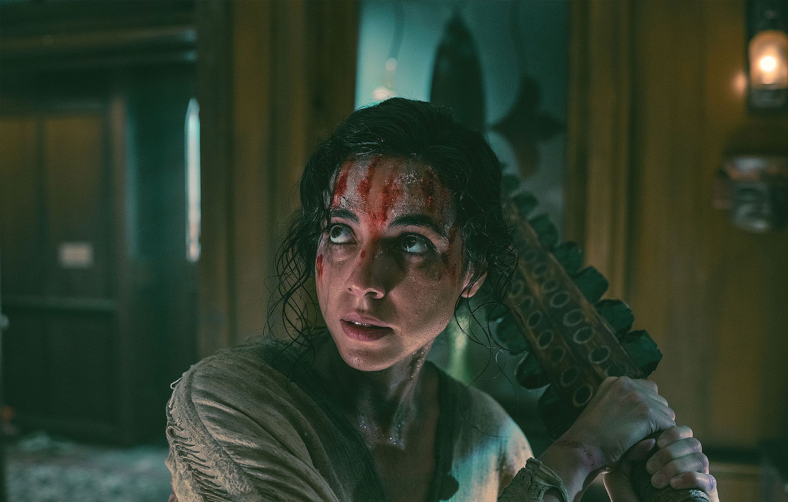

The Imaginarium was founded in 2011 by actor & director Andy Serkis and producer Jonathan Cavendish. Since its creation the company has produced a number of feature films and high-end television dramas.
Learn More
Taika Waititi's Next Goal Wins is coming to cinemas worldwide in November - starring Michael Fassbender as a down-on-his-luck football coach tasked with improving the America Samoa football team as they try to transform from perennial losers into a FIFA World Cup-qualifying outfit.
Learn More

October 2022 saw the release of this magical rollercoaster-ride of a series about Nathan Byrne, the son of a notorious witch responsible for a deadly massacre, who tries to find his place in the world amongst two warring clans.
Learn More

The latest in the Imaginarium's horror catalogue, No One Gets Out Alive was released in 2021, directed by Santiago Menghini and starring Cristina Rodlo as Ambar, an immigrant in search of the American Dream who finds herself in a nightmare she can't escape.
Learn More